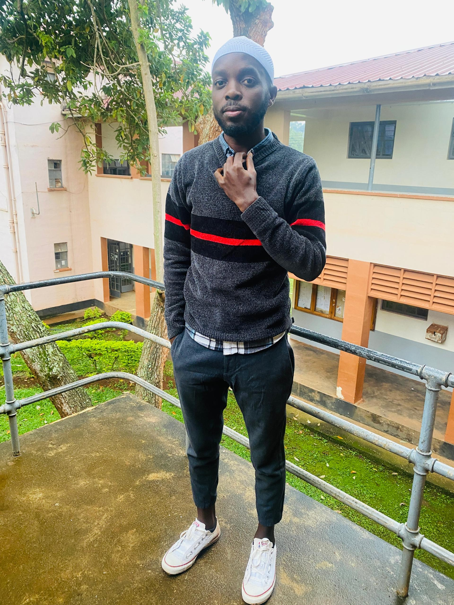

PROFILE
My name is Alinda Mubarack, a student at Kyambogo University pursuing a degree in Bachelors of
Information
Technology and Computing. I am passionate about technology and constantly eager to learn new skills,
especially in
networking, web development, and database management. I have a strong interest in Cisco networking and
Linux administration, which I am currently studying during my internship. I am hardworking, creative,
and enjoy solving problems using technology. In my free time, I enjoy watching movies and exploring
creative ideas in photography and design.
| Year | Instution | Award |
|---|---|---|
| 2024 to date | Kyambogo University | Pending(Year two student) |
| 2019 to 2020 | Midland High School Kawempe | UACE certificate |
| 2015 to 2018 | Midland High School Kawempe | UCE certificate |
| 2008 to 2014 | Rwimi Parents' School | PLE certificate |